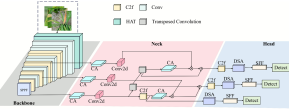

👋About Me
I am a Computer Technology MS student at School of Computer Science (School of Artificial Intelligence), South-Central Minzu University, advised by Dr. Jianlin Zhu, I was also fortunate to work closely with Prof. Xiao Zhang. My research lies in the interdisciplinary areas of artificial intelligence and medical image analysis, aiming at advancing healthcare with machine intelligence. My research focuses on Medical Image Segmentation, Multimodal Learning, Semi-Supervised Learning. I am particularly interested in developing innovative deep learning methodologies for multimodal medical image analysis and healthcare technology applications. I also received my B.S. degree in Network Engineering from South-Central Minzu University in 2024.
I am currently applying for Ph.D. programs starting in Fall 2027. My research interests include Computer Vision, Medical Image Segmentation and Multimodal Learning. Please feel free to view my CV for more details.
🔥 News
- [09/2026] 🏆🏆 I received the National Scholarship for Master’s Students (the highest scholarship for master’s students).
- [10/2025] 🎉🎉 One paper was accepted by TVC.
- [09/2025] 🤗🤗 I am awarded the First-class Academic Scholarship for master's students.
- [09/2025] 🤗🤗 I am awarded the Outstanding Graduate Student for master's students.
- [03/2025] 🎉🎉 One paper was accepted by CGI.
- [09/2024] 🎉🎉 Started my MS studies at South-Central Minzu University.
- [06/2024] 🎉🎉 Graduated with B.S. in Network Engineering.
📝 Publications
Peer-Reviewed Publications
-
TVC 2025

-
CGI 2024

Manuscripts under Review
-
AIIM

-
ASOC

-
JBHI

🏆Awards
- [09/2026] National Scholarship for Master’s Students
- [09/2026] Outstanding Graduate Student
- [09/2026] First-class Academic Scholarship for Graduate Students
- [09/2025] First-class Academic Scholarship for Graduate Students
- [09/2025] Outstanding Graduate Student
- [09/2024] Second-class Academic Scholarship for Graduate Students
- [09/2023] National Encouragement scholarship
📖 Education
- 2024.09 - Present, Master, South-Central Minzu University, Wuhan.
- 2020.09 - 2024.07, Undergraduate, South-Central Minzu University, Wuhan.